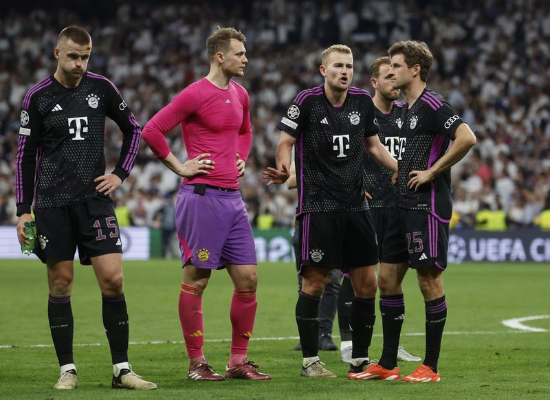

.png)
Thursday, 09 May 2024
Soccer Football - Champions League - Semi Final - Second Leg - Real Madrid v Bayern Munich - Santiago Bernabeu, Madrid, Spain - May 8, 2024 Bayern Munich's Eric Dier, Manuel Neuer, Matthijs de Ligt and Thomas Mueller look dejected after the match REUTERS/Juan Medina
MADRID (Reuters) - Bayern Munich were left fuming following a late offside decision against them in Wednesday's 2-1 loss to Real Madrid in the Champions League semi-final, second leg. Dutch defender Matthijs de Ligt had stabbed in what he thought was a stoppage time equaliser that would have taken the game into extra time.
Yet the linesman had already flagged for offside and the referee blown his whistle before De Ligt let fly, with Real seeing out the match to secure a 4-3 aggregate win. "I think it's pretty clear and there is no doubt that is against the rules of modern football," Bayern coach Thomas Tuchel said. "A disaster. An absolute disaster. With Real's second goal, they let the play continue. The clear rule is that the scene must continue. The first mistake was made by the linesman, the second by the referee," he said. Bayern took the lead with Alphonso Davies' shot midway through the second half but Real battled back with two late goals from Joselu to book their final spot.
De Ligt said the linesman had apologised to him after the game. "Very difficult. Of course as sportspeople we accept it," said Tuchel. "But it is a semi-final, it's not for two such violations of the rule. Everyone has to be at their limit. The referees have to be there as well." "That is what we expect. So the apology does not really help." Bayern keeper Manuel Neuer spilled the ball into Joselu's path for the equaliser in the 88th minute but Tuchel did not want to blame his keeper who had been outstanding up to that point. "Ninety-nine out of 100 times he makes it. It is just very, very bitter. No-one will point a finger at him and he is the most unhappy one," said the coach. Real progressed to their sixth Champions League final in 10 years and will bid for a record-extending 15th title against Borussia Dortmund at Wembley on June 1.
(Reporting by Karolos Grohmann; Editing by Toby Davis)